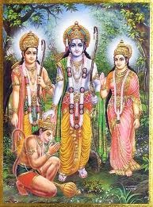
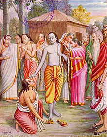
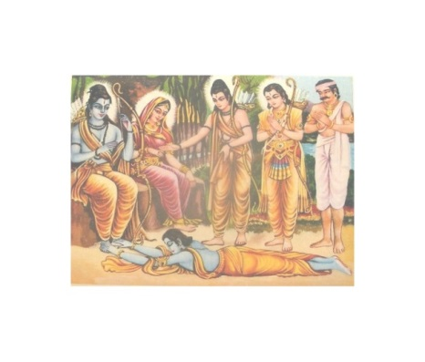
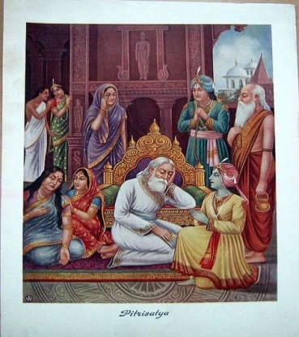
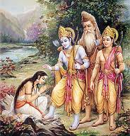
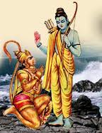
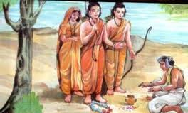
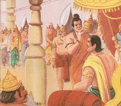

भगति पच्छ हठ करि रहेउँ दीन्हि महारिषि साप। मुनि दुर्लभ बर पायउँ देखहु भज्ज न प्रताप॥ 114 ख॥
मैं हठ करके भक्ति पक्ष पर अड़ा रहा , जिससे महर्षि लोमश ने मुझे शाप दिया , परन्तु उसका फल यह हुआ कि जो मुनियों को भी दुर्लभ है , वह वरदान मैंने पाया। भज्ज न का प्रताप तो देखिए!॥ 114 ( ख)॥
चौपाई :
जे असि भगति जानि परिहरहीं। केवल ग्यान हेतु श्रम करहीं॥ ते जड़ कामधेनु गृहँ त्यागी। खोजत आकु फिरहिं पय लागी॥ 1 ॥
जो भक्ति की ऐसी महिमा जानकर भी उसे छोड़ देते हैं और केवल ज्ञान के लिए श्रम (साधन) करते हैं , वे मूर्ख घर पर खड़ी हुई कामधेनु को छोड़कर दूध के लिए मदार के पेड़ को खोजते फिरते हैं॥ 1 ॥
सुनु खगेस हरि भगति बिहाई। जे सुख चाहहिं आन उपाई॥ ते सठ महासिंधु बिनु तरनी। पैरि पार चाहहिं जड़ करनी॥ 2 ॥
हे पक्षीराज! सुनिए , जो लोग श्री हरि की भक्ति को छोड़कर दूसरे उपायों से सुख चाहते हैं , वे मूर्ख और जड़ करनी वाले (अभागे) बिना ही जहाज के तैरकर महासमुद्र के पार जाना चाहते हैं॥ 2 ॥
सुनि भसुंडि के बचन भवानी। बोलेउ गरुड़ हरषि मृदु बानी॥ तव प्रसाद प्रभु मम उर माहीं। संसय सोक मोह भ्रम नाहीं॥ 3 ॥
( शिवजी कहते हैं-) हे भवानी! भुशुण्डिजी के वचन सुनकर गरुड़जी हर्षित होकर कोमल वाणी से बोले- हे प्रभो! आपके प्रसाद से मेरे हृदय में अब संदेह , शोक , मोह और कुछ भी नहीं रह गया॥ 3 ॥
सुनेउँ पुनीत राम गुन ग्रामा। तुम्हरी कृपाँ लहेउँ बिश्रामा॥ एक बात प्रभु पूँछउँ तोही। कहहु बुझाइ कृपानिधि मोही॥ 4 ॥
मैंने आपकी कृपा से श्री रामचंद्रजी के पवित्र गुण समूहों को सुना और शांति प्राप्त की। हे प्रभो! अब मैं आपसे एक बात और पूछता हूँ। हे कृपासागर! मुझे समझाकर कहिए॥ 4 ॥
कहहिं संत मुनि बेद पुराना। नहिं कछु दुर्लभ ग्यान समाना॥ सोइ मुनि तुम्ह सन कहेउ गोसाईं। नहिं आदरेहु भगति की नाईं॥ 5 ॥
संत मुनि , वेद और पुराण यह कहते हैं कि ज्ञान के समान दुर्लभ कुछ भी नहीं है। हे गोसाईं! वही ज्ञान मुनि ने आपसे कहा , परन्तु आपने भक्ति के समान उसका आदर नहीं किया॥ 5 ॥
ग्यानहि भगतिहि अंतर केता। सकल कहहु प्रभु कृपा निकेता॥ सुनि उरगारि बचन सुख माना। सादर बोलेउ काग सुजाना॥ 6 ॥
हे कृपा के धाम! हे प्रभो! ज्ञान और भक्ति में कितना अंतर है ? यह सब मुझसे कहिए। गरुड़जी के वचन सुनकर सुजान काकभुशुण्डिजी ने सुख माना और आदर के साथ कहा-॥ 6 ॥
भगतिहि ग्यानहि नहिं कछु भेदा। उभय हरहिं भव संभव खेदा॥ नाथ मुनीस कहहिं कछु अंतर। सावधान सोउ सुनु बिहंगबर॥ 7 ॥
भक्ति और ज्ञान में कुछ भी भेद नहीं है। दोनों ही संसार से उत्पन्न क्लेशों को हर लेते हैं। हे नाथ! मुनीश्वर इनमें कुछ अंतर बतलाते हैं। हे पक्षीश्रेष्ठ! उसे सावधान होकर सुनिए॥ 7 ॥
ग्यान बिराग जोग बिग्याना। ए सब पुरुष सुनहु हरिजाना॥ पुरुष प्रताप प्रबल सब भाँती। अबला अबल सहज जड़ जाती॥ 8 ॥
हे हरि वाहन! सुनिए , ज्ञान , वैराग्य , योग , विज्ञान- ये सब पुरुष हैं। पुरुष का प्रताप सब प्रकार से प्रबल होता है। अबला (माया) स्वाभाविक ही निर्बल और जाति (जन्म) से ही जड़ (मूर्ख) होती है॥ 8 ॥
दोहा :
पुरुष त्यागि सक नारिहि जो बिरक्त मति धीर। न तु कामी बिषयाबस बिमुख जो पद रघुबीर॥ 115 क॥
परन्तु जो वैराग्यवान् और धीरबुद्धि पुरुष हैं वही स्त्री को त्याग सकते हैं , न कि वे कामी पुरुष , जो विषयों के वश में हैं (उनके गुलाम हैं) और श्री रघुवीर के चरणों से विमुख हैं॥ 115 ( क)॥
सोरठा :
सोउ मुनि ग्याननिधान मृगनयनी बिधु मुख निरखि। बिबस होइ हरिजान नारि बिष्नु माया प्रगट॥ 115 ख॥
वे ज्ञान के भण्डार मुनि भी मृगनयनी (युवती स्त्री) के चंद्रमुख को देखकर विवश (उसके अधीन) हो जाते हैं। हे गरुड़जी! साक्षात् भगवान विष्णु की माया ही स्त्री रूप से प्रकट है॥ 115 ( ख)॥
चौपाई :
इहाँ न पच्छपात कछु राखउँ। बेद पुरान संत मत भाषउँ॥ मोह न नारि नारि कें रूपा। पन्नगारि यह रीति अनूपा॥ 1 ॥
यहाँ मैं कुछ पक्षपात नहीं रखता। वेद , पुराण और संतों का मत (सिद्धांत) ही कहता हूँ। हे गरुड़जी! यह अनुपम (विलक्षण) रीति है कि एक स्त्री के रूप पर दूसरी स्त्री मोहित नहीं होती॥ 1 ॥
माया भगति सुनहु तुम्ह दोऊ। नारि बर्ग जानइ सब कोऊ॥ पुनि रघुबीरहि भगति पिआरी। माया खलु नर्तकी बिचारी॥ 2 ॥
आप सुनिए , माया और भक्ति- ये दोनों ही स्त्री वर्ग की हैं , यह सब कोई जानते हैं। फिर श्री रघुवीर को भक्ति प्यारी है। माया बेच ारी तो निश्चय ही नाचने वाली (नट नी मात्र) है॥ 2 ॥
भगतिहि सानुकूल रघुराया। ताते तेहि डरपति अति माया॥ राम भगति निरुपम निरुपाधी। बसइ जासु उर सदा अबाधी॥ 3 ॥
श्री रघुनाथजी भक्ति के विशेष अनुकूल रहते हैं। इसी से माया उससे अत्यंत डरती रहती है। जिसके हृदय में उपमारहित और उपाधिरहित (विशुद्ध) रामभक्ति सदा बिना किसी बाधा (रोक-टोक) के बसती है , ॥ 3 ॥
तेहि बिलोकि माया सकुचाई। करि न सकइ कछु निज प्रभुताई॥ अस बिचारि जे मुनि बिग्यानी। जाचहिं भगति सकल सुख खानी॥ 4 ॥
उसे देखकर माया सकुचा जाती है। उस पर वह अ पनी प्रभुता कुछ भी नहीं चला सकती। ऐसा विचार कर ही जो विज्ञानी मुनि हैं , वे भी सब सुखों की खान भक्ति की ही याचना -प्रार्थना करते हैं॥ 4 ॥
दोहा :
यह रहस्य रघुनाथ कर बेगि न जानइ कोइ। जो जानइ रघुपति कृपाँ सपनेहुँ मोह न होइ॥ 116 क॥
श्री रघुनाथजी का यह रहस्य (गुप्त मर्म) जल्दी कोई भी नहीं जान पाता। श्री रघुनाथजी की कृपा से जो इसे जान जाता है , उसे स्वप्न में भी मोह नहीं होता॥ 116 ( क)॥
औरउ ग्यान भगति कर भेद सुनहु सुप्रबीन। जो सुनि होइ राम पद प्रीति सदा अबिछीन॥ 116 ख॥
हे सुचतुर गरुड़जी! ज्ञान और भक्ति का और भी भेद सुनिए , जिसके सुनने से श्री रामजी के चरणों में सदा अविच्छिन्न (एकतार -एकरस ) प्रेम हो जाता है॥ 116 ( ख)॥
चौपाई :
सुनहु तात यह अकथ कहानी। समुझत बनइ न जाइ बखानी॥ ईस्वर अंस जीव अबिनासी। चेतन अमल सहज सुख रासी॥ 1 ॥
हे तात! यह अकथनी य कहानी (वार्ता) सुनिए। यह समझने से ही बनती है , कहने से बनाने वाली नहीं है । जीव ईश्वर का अंश है। (अतएव) वह अविनाशी , चेतन , निर्मल और स्वभाव से ही सुख की राशि है , (सुख के लिए ही रचा गया है । ) ॥ 1 ॥
सो मायाबस भयउ गोसाईं। बँध्यो कीर मरकट की नाईं॥ जड़ चेतनहि ग्रंथि परि गई। जदपि मृषा छूटत कठिनई॥ 2 ॥
हे गोसाईं ! वह माया के वशीभूत होकर (झूठे सुख के आवरण में ) तोते और वानर की भाँति अपने आप ही बँध गया। इस प्रकार जड़ और चेतन में ग्रंथि (गाँठ) पड़ गई। यद्यपि वह ग्रंथि मिथ्या ही है , तथापि उसके छूटने में कठिनता अत्याधिक है॥ 2 ॥
तब ते जीव भयउ संसारी। छूट न ग्रंथि न होइ सुखारी॥ श्रुति पुरान बहु कहेउ उपाई। छूट न अधिक अधिक अरुझाई॥ 3 ॥
तभी से जीव संसारी (जन्मने-मरने वाला) हो गया। अब न तो वह गाँठ की फाँस छूटती है और न ही वह (उस घुटन के दु:ख से मुक्त हो करके ) वह सुखी होता है। वेदों और पुराणों ने बहुत से उपाय बतलाए हैं , पर उस (ग्रंथि)का खुलना तो दूर बल्कि और अधिकाधिक उलझती चली जाती है॥ 3 ॥
जीव हृदयँ तम मोह बिसेषी। ग्रंथि छूट किमि परइ न देखी॥ अस संजोग ईस जब करई। तबहुँ कदाचित सो निरुअरई॥ 4 ॥
जीव के हृदय में अज्ञान रूपी अंधकार विशेष रूप से छा रहा है , इससे गाँठ देख ही नहीं पड़ती , छूटे तो कैसे ? जब कभी ईश्वर ही कोई ऐसा संयोग उपस्थित कर दें तब भले ही वह (ग्रंथि) छूट जाये –खुलने में आ जाये । ॥ 4 ॥
सात्विक श्रद्धा धेनु सुहाई। जौं हरि कृपाँ हृदयँ बस आई॥ जप तप ब्रत जम नियम अपारा। जे श्रुति कह सुभ धर्म अचारा॥ 5 ॥
श्री हरि की कृपा से यद ि सात्विकी श्रद्धा रूपी सुंदर गाय हृदय रूपी घर में आकर बस जाए , असंख्य जप , तप व्रत यम और नियमादि शुभ धर्म और आचार (आचरण) , जो श्रुतियों ने कहे हैं , ॥ 5 ॥
तेइ तृन हरित चरै जब गाई। भाव बच्छ सिसु पाइ पेन्हाई॥ नोइ निबृत्ति पात्र बिस्वासा। निर्मल मन अहीर निज दासा॥ 6 ॥
ई न्हीं (धर्माचार र ूपी) हरे तृणों (घास) को जब वह गाय चरे और आस्तिक भाव रूपी छोटे बछड़े को पाकर वह पेन्हावे। निवृत्ति (सांसारिक विषयों से और प्रपंच से हटना) नोई ( नियाणा -रस्सी ) है , विश्वास (दूध दुहने का) बरतन है , निर्मल (निष्पाप) मन जो स्वयं अपना दास है उसको दुहने वाला अहीर है , ॥ 6 ॥
परम धर्ममय पय दुहि भाई। अवटै अनल अकाम बनाई॥ तोष मरुत तब छमाँ जुड़ावै। धृति सम जावनु देइ जमावै॥ 7 ॥
हे भाई , इस प्रकार (धर्माचार में प ्रवृत्त सात्विकी श्रद्धा रूपी गाय से भाव , निवृत्ति और वश में किए हुए निर्मल मन की सहायता से) परम धर्ममय दूध दुहकर उसे निष्काम भाव रूपी अग्नि पर भली-भाँति औटावें। फिर क्षमा और संतोष रूपी हवा से उसे ठंडा करें और धैर्य तथा शम (मन का निग्रह) रूपी जामन देकर उसे जमावें॥ 7 ॥
मुदिताँ मथै बिचार मथानी। दम अधार रजु सत्य सुबानी॥ तब मथि काढ़ि लेइ नवनीता। बिमल बिराग सुभग सुपुनीता॥ 8 ॥
तब मुदिता (प्रसन्नता) रूपी कमोरी में तत्व विचार रूपी मथानी से दम (इंद्रिय दमन) के आधार पर (दम रूपी खंभे आदि के सहारे) सत्य और सुंदर वाणी रूपी रस्सी लगाकर उसे मथें और मथकर तब उसमें से निर्मल , सुंदर और अत्यंत पवित्र वैराग्य रूपी मक्खन निकाल लें॥ 8 ॥
दोहा :
जोग अगिनि करि प्रगट तब कर्म सुभासुभ लाइ। बुद्धि सिरावै ग्यान घृत ममता मल जरि जाइ॥ 117 क॥
तब योग रूपी अग्नि प्रकट करके उसमें समस्त शुभाशुभ कर्म रूपी ईंधन लगा दें (सब कर्मों को योग रूपी अग्नि में भस्म कर दें)। जब (वैराग्य रूपी मक्खन का) ममता रूपी मल , जल जाए , तब (बचे हुए) ज्ञान रूपी घी को (निश्चयात्मिका) बुद्धि से ठंडा करें॥ 117 ( क)॥
तब बिग्यानरूपिनी बुद्धि बिसद घृत पाइ। चित्त दिआ भरि धरै दृढ़ समता दिअटि बनाइ॥ 117 ख॥
तब विज्ञान रूपिणी बुद्धि उस (ज्ञान रूपी) निर्मल घी को पाकर उससे चित्त रूपी दीए को भरकर , समता की दीवट बनाकर , उस पर उसे दृढ़तापूर्वक (जमाकर) रखें॥ 117 ( ख)॥
तीनि अवस्था तीनि गुन तेहि कपास तें काढ़ि। तूल तुरीय सँवारि पुनि बाती करै सुगाढ़ि॥ 117 ग॥
( जाग्रत , स्वप्न और सुषुप्ति) तीनों अवस्थाएँ और (सत्त्व , रज और तम) तीनों गुण रूपी कपास से तुरीयावस्था रूपी रूई को निकालकर और फिर उसे सँवारकर उसकी सुं दर ब ंटदार क र ड़ी बत्ती बनाएँ॥ 117 ( ग)॥
सोरठा :
एहि बिधि लेसै दीप तेज रासि बिग्यानमय। जातहिं जासु समीप जरहिं मदादिक सलभ सब॥ 117 घ॥
इस प्रकार तेज की राशि विज्ञानमय दीपक को जलावें , जिसके समीप जाते ही मद आदि सब पतंगे जल जाएँ॥ 117 ( घ)॥
चौपाई :
सोहमस्मि इति बृत्ति अखंडा। दीप सिखा सोइ परम प्रचंडा॥ आतम अनुभव सुख सुप्रकासा। तब भव मूल भेद भ्रम नासा॥ 1 ॥
' सोऽहमस्मि ' ( वह ब्रह्म मैं हूँ) यह जो अखंड (तैलधारावत् कभी न टूटने वाली) वृत्ति है , वही (उस ज्ञानदीपक की) परम प्रचंड दीपशिखा (लौ) है। (इस प्रकार) जब आत्मानुभव के सुख का सुंदर प्रकाश फैलता है , तब संसार के मूल भेद रूपी भ्रम का नाश हो जाता है , ॥ 1 ॥
प्रबल अबिद्या कर परिवारा। मोह आदि तब मिटइ अपारा॥ तब सोइ बुद्धि पाइ उँजिआरा। उर गृहँ बैठि ग्रंथि निरुआरा॥ 2 ॥
और महान् बलवती अविद्या के परिवार मोह आदि का अपार अंधकार मिट जाता है। तब वही (विज्ञानरूपिणी) बुद्धि (आत्मानुभव रूप) प्रकाश को पाकर हृदय रूपी घर में बैठकर उस जड़ चेतन की गाँठ को खोलती है॥ 2 ॥
छोरन ग्रंथि पाव जौं सोई। तब यह जीव कृतारथ होई॥ छोरत ग्रंथ जानि खगराया। बिघ्न नेक करइ तब माया॥ 3 ॥
यदि वह (विज्ञान रूपिणी बुद्धि) उस गाँठ को खोलने पावे , तब यह जीव कृतार्थ हो , परन्तु हे पक्षीराज गरुड़जी! गाँठ खुलती , ढीली पड़ती हुए जानकर माया फिर अनेकों विघ्न खड़े करती है॥ 3 ॥
रिद्धि-सिद्धि प्रेरइ बहु भाई। बुद्धिहि लोभ दिखावहिं आई॥ कल बल छल करि जाहिं समीपा। अंचल बात बुझावहिं दीपा॥ 4 ॥
हे भाई! वह बहुत सी ऋद्धि-सिद्धियों को भेजती है , जो आकर बुद्धि को लोभ दिखाती हैं और वे ऋद्ध ि-सिद्धियाँ कला , बल और छल करके समीप जाती और आँचल की वायु से उस ज्ञान रूपी दीपक को बुझा देती हैं॥ 4 ॥
होइ बुद्धि जौं परम सयानी। तिन्ह तन चितव न अनहित जानी॥ जौं तेहि बिघ्न बुद्धि नहिं बाधी। तौ बहोरि सुर करहिं उपाधी॥ 5 ॥
यदि बुद्धि बहुत ही सयानी हुई , तो वह उन (ऋद्धि-सिद्धियों) को अहितकर (हानिकर) समझकर उनकी ओर ताकती नहीं। इस प्रकार यदि माया के विघ्नों से बुद्धि को बाधा न हुई , तो फिर देवता विघ्न उलझने पैदा करते हैं । ॥ 5 ॥
इंद्री द्वार झरोखा नाना। तहँ तहँ सुर बैठे करि थाना॥ आवत देखहिं बिषय बयारी। ते हठि देहिं कपाट उघारी॥ 6 ॥
इंद्रियों के द्वार हृदय रूपी घर के अनेकों झरोखे हैं। वहाँ-वहा ँ (प्रत्येक झरोखे पर) देवता थान –ठिकाने बना कर बैठे हैं। ज्यों ही वे विषय रूपी हवा को आते देखते हैं , त्यों ही ज़बरदस्ती किवाड़ खोल देते हैं॥ 6 ॥
जब सो प्रभंजन उर गृहँ जाई। तबहिं दीप बिग्यान बुझाई॥ ग्रंथि न छूटि मिटा सो प्रकासा। बुद्धि बिकल भइ बिषय बतासा॥ 7 ॥
ज्यों ही वह तेज हवा हृदय रूपी घर में जाती है , त्यों ही वह विज्ञान रूपी दीपक बुझ जाता है। गाँठ भी नहीं छूटी और वह (आत्मानुभव रूप) प्रकाश भी मिट गया। विषय रूपी हवा से बुद्धि विचलित हो जाती है। (इस प्रकार सारी क्रियाएँ दृढ़ता के अभाव में असफल हो गईं। )॥ 7 ॥
इंद्रिन्ह सुरन्ह न ग्यान सोहाई। बिषय भोग पर प्रीति सदाई॥ बिषय समीर बुद्धि कत भोरी। तेहि बिधि दीप को बार बहोरी॥ 8 ॥
इंद्रियों और उनक े देवताओं को ज्ञान (किसी भाव नहीं ) नहीं सुहाता , क्योंकि उनकी विषय-भोगों में सदा ही प्रीति रहती है और बुद्धि को भी विषय रूपी हवा ने बावली बना दिया। तब फिर (दोबारा) उस ज्ञान दीप को उसी प्रकार से कौन जलावे ? ॥ 8 ॥
दोहा :
तब फिरि जीव बिबिधि बिधि पावइ संसृति क्लेस। हरि माया अति दुस्तर तरि न जाइ बिहगेस॥ 118 क॥
( इस प्रकार ज्ञान दीपक के बुझ जाने पर) तब फिर जीव अनेकों प्रकार से संसृति (जन्म-मरणादि) के क्लेशों में घिर जा ता है। हे पक्षीराज! हरि की माया अत्यंत दुस्तर है , वह सहज ही में पार नहीं की जा सकती , आसानी से काबू नहीं की जा सकती। ॥ 118 ( क)॥
कहत कठिन समुझत कठिन साधत कठिन बिबेक। होइ घुनाच्छर न्याय जौं पुनि प्रत्यूह अनेक॥ 118 ख॥
ज्ञान कहने व समझाने में कठिन है , समझने में कठिन है और साधने में तो ओर भी कठिन है। यदि किसी प्रकार घुमफिर की (संयोगवश) जो यह ज्ञान हो भी जाए , तो फिर (उसे बचाए रखने में) भी तो अनेकों विघ्न हैं॥ 118 ( ख)॥
चौपाई :
ग्यान पंथ कृपान कै धारा। परत खगेस होइ नहिं बारा॥ जो निर्बिघ्न पंथ निर्बहई। सो कैवल्य परम पद लहई॥ 1 ॥
ज्ञान का मार्ग कृपाण (दोधारी तलवार) की धार के समान है। हे पक्षीराज! इस मार्ग से गिरते देर नहीं लगती। जो इस मार्ग को निर्विघ्न निबाह ले जाता है , वही कैवल्य (मोक्ष) रूप परमपद को प्राप्त करता है॥ 1 ॥
अति दुर्लभ कैवल्य परम पद। संत पुरान निगम आगम बद॥ राम भज्ज त सोइ मुकुति गोसाईं। अनइच्छित आवइ बरिआईं॥ 2 ॥
संत , पुराण , वेद और (तंत्र आदि) शास्त्र (सब) यह कहते हैं कि कैवल्य रूप परमपद अत्यंत दुर्लभ है , किंतु हे गोसाईं! वही (अत्यंत दुर्लभ) मुक्ति (सुगम सरल उपाय) श्री रा मजी को भज्ज ने से बिना इच्छा किए ही ज़बरदस्ती आ जाती है॥ 2 ॥
जिमि थल बिनु जल रहि न सकाई। कोटि भाँति कोउ करै उपाई॥ तथा मोच्छ सुख सुनु खगराई। रहि न सकइ हरि भगति बिहाई॥ 3 ॥
जैसे स्थल के बिना जल नहीं रह सकता , चाहे कोई करोड़ों प्रकार के उपाय क्यों न करे। वैसे ही , हे पक्षीराज! सुनिए , मोक्षसुख भी श्री हरि की भक्ति को छोड़कर (बिना आधार ) नहीं रह सकता॥ 3 ॥
अस बिचारि हरि भगत सयाने। मुक्ति निरादर भगति लुभाने॥ भगति करत बिनु जतन प्रयासा। संसृति मूल अबिद्या नासा॥ 4 ॥
ऐसा विचार कर बुद्धिमान् हरि भक्त भक्ति पर लुभाए रहकर मुक्ति का तिरस्कार कर देते हैं। भक्ति करने से संसृति (जन्म-मृत्यु रूप संसार) की जड़ अविद्या बिना ही यंत्र और परिश्रम के (अपने आप) वैसे ही नष्ट हो जाती है , ॥ 4 ॥
भोजन करिअ तृपिति हित लागी। जिमि सो असन पचवै जठरागी॥ असि हरि भगति सुगम सुखदाई। को अस मूढ़ न जाहि सोहाई॥ 5 ॥
जैसे भोजन किया तो जाता है तृप्ति के लिए और उस भोजन को जठराग्नि अपने आप (बिना हमारी चेष्टा के) पचा डालती है , ऐसी सुगम और परम सुख देने वाली हरि भक्ति जिसे न सुहावे , ऐसा मूढ़ कौन होगा ? ॥ 5 ॥
दोहा :
सेवक सेब्य भाव बिनु भव न तरिअ उरगारि। भज्ज हु राम पद पंकज अस सिद्धांत बिचारि॥ 119 क॥
हे सर्पों के शत्रु गरुड़जी! मैं सेवक हूँ और भगवान् मेरे सेव्य (स्वामी) हैं , इस भाव के बिना संसार रूपी समुद्र से तरना नहीं हो सकता। ऐसा सिद्धांत विचारकर श्री रामचंद्रजी के चरण कमलों का भज्ज न कीजिए॥ 119 ( क)॥
जो चेतन कहँ जड़ करइ जड़हि करइ चैतन्य। अस समर्थ रघुनायकहि भज्ज हिं जीव ते धन्य॥ 119 ख॥
जो चेतन को जड़ कर देता है और जड़ को चेतन कर देता है , ऐसे समर्थ श्री रघुनाथजी को जो जीव भज्ज ते हैं , वे धन्य हैं॥ 119 ( ख)॥
चौपाई :
कहेउँ ग्यान सिद्धांत बुझाई। सुनहु भगति मनि कै प्रभुताई॥ राम भगति चिंतामनि सुंदर। बसइ गरुड़ जाके उर अंतर॥ 1 ॥
मैंने ज्ञान का सिद्धांत समझाकर कहा। अब भक्ति रूपी मणि की प्रभुता (महिमा) सुनिए। श्री रामजी की भक्ति सुंदर चिंतामणि है। हे गरुड़जी! यह जिसके हृदय के अंदर बसती है , ॥ 1 ॥
परम प्रकास रूप दिन राती। नहिं कछु चहिअ दिआ घृत बाती॥ मोह दरिद्र निकट नहिं आवा। लोभ बात नहिं ताहि बुझावा॥ 2 ॥
वह दिन-रात (अपने आप ही) परम प्रकाश रूप रहता है। उसको दीपक , घी और बत्ती कुछ भी नहीं चाहिए। (इस प्रकार मणि का एक तो स्वाभाविक प्रकाश रहता है) फिर मोह रूपी दरिद्रता समीप नहीं आती (क्योंकि मणि स्वयं धनरूप है) और (तीसरे) लोभ रूपी हवा उस मणिमय दीप को बुझा नहीं सकती (क्योंकि मणि स्वयं प्रकाश रूप है , वह किसी दूसरे की सहायता से प्रकाश नहीं करती)॥ 2 ॥
प्रबल अबिद्या तम मिटि जाई। हारहिं सकल सलभ समुदाई॥ खल कामादि निकट नहिं जाहीं। बसइ भगति जाके उर माहीं॥ 3 ॥
( उसके प्रकाश से) अविद्या का प्रबल अंधकार मिट जाता है। मदादि पतंगों का सारा समूह हार जाता है। जिसके हृदय में भक्ति बसती है , काम , क्रोध और लोभ आदि दुष्ट तो उसके पास भी नहीं फटकते ॥ 3 ॥
गरल सुधासम अरि हित होई। तेहि मनि बिनु सुख पाव न कोई॥ दब्यापहिं मानस रोग न भारी। जिन्ह के बस सब जीव दुखारी॥ 4 ॥
उसके लिए विष अमृत के समान और शत्रु मित्र हो जाता है। उस मणि के बिना कोई सुख नहीं पाता। बड़े-बड़े मानस रोग , जिनके वश होकर सब जीव दुःखी हो रहे हैं , उस (मणिधारक) को कभी नहीं व्यापते॥ 4 ॥
राम भगति मनि उर बस जाकें। दुख लवलेस न सपनेहुँ ताकें॥ चतुर सिरोमनि तेइ जग माहीं। जे मनि लागि सुजतन कराहीं॥ 5 ॥
श्री रामभक्ति रूपी मणि जिसके हृदय में बसती है , उसे स्वप्न में भी लेशमात्र दुःख नहीं होता। जगत मे ं वे ही मनुष्य चतुर-सुजानों के शिरोमणि (बन पाते) हैं जो उस भक्ति रूपी मणि के लिए भली-भाँति यत्न करते हैं॥ 5 ॥
सो मनि जदपि प्रगट जग अहई। राम कृपा बिनु नहिं कोउ लहई॥ सुगम उपाय पाइबे केरे। नर हतभाग्य देहिं भटभेरे॥ 6 ॥
यद्यपि वह मणि जगत् में प्रकट (प्रत्यक्ष) है , पर बिना श्री रामजी की कृपा के उसे कोई पा नहीं सकता। उसके पाने के उपाय भी सुगम ही हैं , पर अभागे मनुष्य उन्हें ठुकरा देते हैं॥ 6 ॥
पावन पर्बत बेद पुराना। राम कथा रुचिराकर नाना॥ मर्मी सज्जन सुमति कुदारी। ग्यान बिराग नयन उरगारी॥ 7 ॥
वेद-पुराण पवित्र पर्वत हैं। श्री रामजी की नाना प्रकार की कथाएँ उन पर्वतों में सुंदर खानें हैं। संत पुरुष (उनकी इन खानों के रहस्य को जानने वाले) मर्मी हैं और सुंदर बुद्धि (खोदने वाली) कुदाल है। हे गरुड़जी! ज्ञान और वैराग्य ये दो उनके नेत्र हैं॥ 7 ॥
भाव सहित खोजइ जो प्रानी। पाव भगति मनि सब सुख खानी॥ मोरें मन प्रभु अस बिस्वासा। राम ते अधिक राम कर दासा॥ 8 ॥
जो प्राणी उसे प्रेम के साथ खोजता है , वह सब सुखों की खान इस भक्ति रूपी मणि को पा जाता है। हे प्रभो! मेरे मन में तो ऐसा विश्वास है कि श्री रामजी के दास (की महत्ता इस भक्ति ही के कारण) श्री रामजी से भी बढ़कर हैं॥ 8 ॥
राम सिंधु घन सज्जन धीरा। चंदन तरु हरि संत समीरा॥ सब कर फल हरि भगति सुहाई। सो बिनु संत न काहूँ पाई॥ 9 ॥
श्री रामचंद्रजी समुद्र हैं तो धीर संत पुरुष मेघ हैं। श्री हरि चंदन के वृक्ष हैं तो संत पवन हैं। सब साधनों का फलों का फल सुंदर हरि भक्ति ही है। उसे संत के बिना किसी ने नहीं पाया॥ 9 ॥
अस बिचारि जोइ कर सतसंगा। राम भगति तेहि सुलभ बिहंगा॥ 10 ॥
ऐसा विचार कर जो भी संतों का सत्त संग करता है , हे गरुड़जी उसके लिए श्री रामजी की भक्ति सुलभ हो जाती है॥ 10 ॥
दोहा :
ब्रह्म पयोनिधि मंदर ग्यान संत सुर आहिं। कथा सुधा मथि काढ़हिं भगति मधुरता जाहिं॥ 120 क॥
ब्रह्म (वेद) समुद्र है , ज्ञान मंदराचल है और संत देवता हैं , जो उस समुद्र को मथकर कथा रूपी अमृत निकालते हैं , उसी में ही भक्ति रूपी मधुरता बसी रहती है॥ 120 ( क)॥
बिरति चर्म असि ग्यान मद लोभ मोह रिपु मारि। जय पाइअ सो हरि भगति देखु खगेस बिचारि॥ 120 ख॥
वैराग्य रूपी ढाल से अपने को बचाते हुए और ज्ञान रूपी तलवार से मद , लोभ और मोह रूपी वैरियों को मारकर जो विजय प्राप्त करती है , वह हरि भक्ति ही है , हे पक्षीराज! इसे विचार कर देखिए॥ 120 ( ख)॥
चौपाई :
पुनि सप्रेम बोलेउ खगराऊ। जौं कृपाल मोहि ऊपर भाऊ॥। नाथ मोहि निज सेवक जानी। सप्त प्रस्न मम कहहु बखानी॥ 1 ॥
पक्षीराज गरुड़जी फिर प्रेम सहित बोले- हे कृपालु! यदि मुझ पर आपका प्रेम है , तो हे नाथ! मुझे अपना सेवक जानकर मेरे सात प्रश्नों के उत्तर विस्तार से कहिए॥ 1 ॥
प्रथमहिं कहहु नाथ मतिधीरा। सब ते दुर्लभ कवन सरीरा॥ बड़ दुख कवन कवन सुख भारी। सोउ संछेपहिं कहहु बिचारी॥ 2 ॥
हे नाथ! हे धीर बुद्धि! पहले तो यह बताइए कि सबसे दुर्लभ कौन सा शरीर है ? फिर सबसे बड़ा दुःख कौन सा है ? और सबसे बड़ा सुख क्या है ? यह भी विचार कर संक्षेप में ही सही , कहिए .... ॥ 2 ॥
संत असंत मरम तुम्ह जानहु। तिन्ह कर सहज सुभाव बखानहु॥ कवन पुन्य श्रुति बिदित बिसाला। कहहु कवन अघ परम कराला॥ 3 ॥
संत और असंत में भेद -अन्तर आप जानते हैं , उनके सहज स्वभाव और प्रवृति का वर्णन कीजिए। फिर कहिए कि श्रुतियों में प्रसिद्ध सबसे महान् पुण्य कौन सा है ? और सबसे महान् भयंकर पाप क्या है ? ॥ 3 ॥
मानस रोग कहहु समुझाई। तुम्ह सर्बग्य कृपा अधिकाई॥ तात सुनहु सादर अति प्रीती। मैं संछेप कहउँ यह नीती॥ 4 ॥
फिर मानस रोगों को समझाकर कहिए। आप सर्वज्ञ हैं और मुझ पर आपकी कृपा भी बहुत है। (काकभुशुण्डिजी ने कहा-) हे तात अत्यंत आदर और प्रेम के साथ सुनिए। मैं यह नीति संक्षेप से कहता हूँ॥ 4 ॥
नर तन सम नहिं कवनिउ देही। जीव चराचर जाचत तेही॥ नरक स्वर्ग अपबर्ग निसेनी। ग्यान बिराग भगति सुभ देनी॥ 5 ॥
मनुष्य शरीर के समान कोई शरीर नहीं है। चर-अचर सभी जीव उसकी याचना , कामना करते हैं। वह मनुष्य शरीर नरक , स्वर्ग और मोक्ष की सीढ़ी है तथा कल्याणकारी ज्ञान , वैराग्य और भक्ति को देने वाला है॥ 5 ॥
सो तनु धरि हरि भज्ज हिं न जे नर। होहिं बिषय रत मंद मंद तर॥ काँच किरिच बदलें ते लेहीं। कर ते डारि परस मनि देहीं॥ 6 ॥
ऐसे मनुष्य शरीर को धारण (प्राप्त) करके भी जो लोग श्री हरि का भज्ज न नहीं करते और नीच से भी नीच विषयों में अनुरक्त रहते हैं , वे पारसमणि को अपने ही हाथ से फेंक देते हैं और बदले में (जानबूझ कर) काँच के टुकड़े ले लेते हैं॥ 6 ॥
नहिं दरिद्र सम दुख जग माहीं। संत मिलन सम सुख जग नाहीं॥ पर उपकार बचन मन काया। संत सहज सुभाउ खगराया॥ 7 ॥
जगत् में दरिद्रता के समान दुःख नहीं है तथा संतों के मिलने के समान जगत् में सुख नहीं है। और हे पक्षीराज! मन , वचन और शरीर से परोपकार करना , यह संतों का सहज स्वभाव है॥ 7 ॥
संत सहहिं दुख पर हित लागी। पर दुख हेतु असंत अभागी॥ भूर्ज तरू सम संत कृपाला। पर हित निति सह बिपति बिसाला॥ 8 ॥
संत दूसरों की भलाई के लिए दुःख सहते हैं और अभागे असंत दूसरों को दुःख पहुँचाने के लिए (दु:ख तक सहन कर सकते हैं ) । कृपालु संत भोज के वृक्ष के समान दूसरों के हित के लिए भारी विपत्ति सहते हैं , (अपनी खाल तक उधड़वा लेते हैं)॥ 8 ॥
सन इव खल पर बंधन करई। खाल कढ़ाई बिपति सहि मरई॥ खल बिनु स्वारथ पर अपकारी। अहि मूषक इव सुनु उरगारी॥ 9 ॥
किंतु दुष्ट लोग सन की भाँति दूसरों को बाँधते हैं और (उन्हें बाँधने -बँधवाने के लिए) अपनी खाल तक खिंचवाकर विपत्ति , पीड़ा सहकर मर जाते हैं। हे सर्पों के शत्रु गरुड़जी! सुनिए , दुष्ट बिना किसी स्वार्थ के साँप और चूहे के समान अकारण ही दूसरों का अपकार , बुरा करते हैं॥ 9 ॥
पर संपदा बिनासि नसाहीं। जिमि ससि हति हिम उपल बिलाहीं॥ दुष्ट उदय जग आरति हेतू। जथा प्रसिद्ध अधम ग्रह केतू॥ 10 ॥
वे पराई संपत्ति का नाश करके स्वयं नष्ट हो जाते हैं , जैसे खेती का नाश करके ओले नष्ट हो जाते हैं। दुष्ट का आना तो प्रसिद्ध अधम ग्रह केतु के उदय की भाँति जगत को दुःख देने के लिए ही होता है । ॥ 10 ॥
संत उदय संतत सुखकारी। बिस्व सुखद जिमि इंदु तमारी॥ परम धर्म श्रुति बिदित अहिंसा। पर निंदा सम अघ न गरीसा॥ 11 ॥
और संतों का आगमन सदा ही सुखकर होता है , जैसे चंद्रमा और सूर्य का उदय विश्व भर के लिए सुखदायक है। वेदों में अहिंसा को परम धर्म माना है और परनिन्दा के समान घोर पाप नहीं है॥ 11 ॥
हर गुर निंदक दादुर होई। जन्म सहस्र पाव तन सोई॥ द्विज निंदक बहु नरक भोग करि। जग जनमइ बायस सरीर धरि॥ 12 ॥
शंकरजी और गुरु की निंदा करने वाला मनुष्य (अगले जन्म में) मेंढक होता है और वह हजार जन्म तक वही मेंढक का शरीर पाता है। ब्राह्मणों की निंदा करने वाला व्यक्ति बहुत से नरक भोगकर फिर जगत् में कौए का शरीर धारण करके जन्म लेता है॥ 12 ॥
सुर श्रुति निंदक जे अभिमानी। रौरव नरक परहिं ते प्रानी॥ होहिं उलूक संत निंदा रत। मोह निसा प्रिय ग्यान भानु गत॥ 13 ॥
जो अभिमानी जीव देवताओं और वेदों की निंदा करते हैं , वे रौरव नरक में पड़ते हैं। संतों की निंदा में लगे हुए लोग उल्लू होते हैं , जिन्हें मोह रूपी रात्रि प्रिय होती है और ज्ञान रूपी सूर्य जिनके लिए सदा के लिए बीत गया , अस्त हो गया हो ता है । ॥ 13 ॥
सब कै निंदा जे जड़ करहीं। ते चमगादुर होइ अवतरहीं॥ सुनहु तात अब मानस रोगा। जिन्ह ते दुख पावहिं सब लोगा॥ 14 ॥
जो मूर्ख मनुष्य सब की निंदा करते हैं , वे चमगादड़ होकर जन्म लेते हैं। हे तात! अब मानस रोग सुनिए , जिनसे सब लोग दुःख पाया करते हैं॥ 14 ॥
मोह सकल ब्याधिन्ह कर मूला। तिन्ह ते पुनि उपजहिं बहु सूला॥ काम बात कफ लोभ अपारा। क्रोध पित्त नित छाती जारा॥ 15 ॥
सब रोगों की जड़ मोह (अज्ञान) है। उन व्याधियों से फिर और बहुत से शूल उत्पन्न होते हैं। काम वात है , लोभ अपार (बढ़ा हुआ) कफ है और क्रोध पित्त है जो सदा छाती जलाता रहता है॥ 15 ॥
प्रीति करहिं जौं तीनिउ भाई। उपजइ सन्यपात दुखदाई॥ बिषय मनोरथ दुर्गम नाना। ते सब सूल नाम को जाना॥ 16 ॥
यदि कहीं ये तीनों भाई (वात , पित्त और कफ) प्रीति कर लें (मिल जाएँ) , तो दुःखदायक सन्निपात रोग उत्पन्न होता है। कठिनता से प्राप्त (पूर्ण) होने वाले जो विषयों के मनोरथ हैं , वे ही सब शूल (कष्टदायक रोग) हैं , उनके नाम कौन जानता है (अर्थात् वे अपार हैं)॥ 16 ॥
चौपाई :
ममता दादु कंडु इरषाई। हरष बिषाद गरह बहुताई॥ पर सुख देखि जरनि सोइ छई। कुष्ट दुष्टता मन कुटिलई॥ 17 ॥
ममता से दाद , ईर्ष्या से खुजली , हर्ष-विषाद से गले के रोगों की अधिकता होती है (गलगंड , कण्ठमाला या घेघा आदि रोग हैं) , पराए सुख को देखकर जो जलन होती है , वही क्षयी है। दुष्टता और मन की कुटिलता ही कोढ़ है॥ 17 ॥
अहंकार अति दुखद डमरुआ। दंभ कपट मद मान नेहरुआ॥ तृस्ना उदरबृद्धि अति भारी। त्रिबिधि ईषना तरुन तिजारी॥ 18 ॥
अहंकार अत्यंत दुःख देने वाला डमरू (गाँठ का) रोग है। दम्भ , कपट , मद और मान नहरुआ (नसों का) रोग है। तृष्णा बड़ा भारी उदर वृद्धि (जलोदर) रोग है। तीन प्रकार (पुत्र , धन और मान) की प्रबल इच्छाएँ प्रबल तिजारी हैं॥ 18 ॥
जुग बिधि ज्वर मत्सर अबिबेका। कहँ लगि कहौं कुरोग अनेका॥ 19 ॥
मत्सर और अविवेक दो प्रकार के ज्वर हैं। इस प्रकार अनेकों बुरे रोग हैं , जिन्हें कहाँ तक कहूँ॥ 19 ॥
दोहा :
एक ब्याधि बस नर मरहिं ए असाधि बहु ब्याधि। पीड़हिं संतत जीव कहुँ सो किमि लहै समाधि॥ 121 क॥
एक ही रोग के वश होकर मनुष्य मर जाते हैं , फिर ये तो बहुत से असाध्य रोग हैं। ये जीव को निरंतर कष्ट देते रहते हैं , ऐसी दशा में वह ध्यान - समाधि (शांति) को कैसे प्राप्त करे ? ॥ 121 ( क)॥
नेम धर्म आचार तप ग्यान जग्य जप दान। भेषज पुनि कोटिन्ह नहिं रोग जाहिं हरिजान॥ 121 ख॥
नियम , धर्म , आचार (उत्तम आचरण) , तप , ज्ञान , यज्ञ , जप , दान तथा और भी करोड़ों औषधियाँ हैं , परन्तु हे गरुड़जी! उनसे ये रोग नहीं जाते॥ 121 ( ख)॥
चौपाई :
एहि बिधि सकल जीव जग रोगी। सोक हरष भय प्रीति बियोगी॥ मानस रोग कछुक मैं गाए। हहिं सब कें लखि बिरलेन्ह पाए॥ 1 ॥
इस प्रकार जगत् में समस्त जीव रोगी हैं , जो शोक , हर्ष , भय , प्रीति और वियोग के दुःख से और भी दुःखी हो रहे हैं। मैंने ये थो़ड़े से मानस र ोग कहे हैं। इन रोगों से ग्रस्त तो सब जीव हैं परन्तु इन्हें कोई बिरला ही जान पाया है । ॥ 1 ॥
जाने ते छीजहिं कछु पापी। नास न पावहिं जन परितापी॥ बिषय कुपथ्य पाइ अंकुरे। मुनिहु हृदयँ का नर बापुरे॥ 2 ॥
प्राणियों को जलाने वाले इन पापी (रोगों ) का अगर ज्ञान हो जाये तो कुछ क्षीण अवश्य हो जाते हैं , परन्तु एकदम नाश को नहीं प्राप्त होते। विषय रूप कुपथ्य पाकर ये मुनियों के हृदय में भी अंकुरित हो उठते हैं , तब बेचारे साधारण मनुष्य तो क्या चीज हैं॥ 2 ॥
राम कृपाँ नासहिं सब रोगा। जौं एहि भाँति बनै संजोगा॥ सदगुर बैद बचन बिस्वासा। संजम यह न बिषय कै आसा॥ 3 ॥
यदि श्री रामजी की कृपा से इस प्रकार (भक्ति पथ ) का संयोग बन जाए तो ये सब रोग नष्ट हो सकते हैं । सद्गुरु रूपी वैद्य के वचन में विश्वास हो। विषयों की आशा न करे , यही संयम (परहेज) हो जाये तो। ॥ 3 ॥
चौपाई :
रघुपति भगति सजीवन मूरी। अनूपान श्रद्धा मति पूरी॥ एहि बिधि भलेहिं सो रोग नसाहीं। नाहिं त जतन कोटि नहिं जाहीं॥ 4 ॥
श्र ी रघुनाथजी की भक्ति संजीवनी बूटी है। श्रद्धा से पूर्ण बुद्धि ही अनुपान (दवा के साथ लिया जाने वाला मधु आदि) है। इस प्रकार का संयोग हो तो वे रोग भले ही नष्ट हो जाएँ , नहीं तो करोड़ों प्रयत्नों से भी नहीं जाते॥ 4 ॥
जानिअ तब मन बिरुज गोसाँई। जब उर बल बिराग अधिकाई॥ सुमति छुधा बाढ़इ नित नई। बिषय आस दुर्बलता गई॥ 5 ॥
हे गोसाईं! मन को निरोग हुआ तब जानना चाहिए , जब हृदय में वैराग्य का बल बढ़ जाए , उत्तम बुद्धि रूपी भूख नित नई बढ़ती रहे और विषयों की आशा रूपी दुर्बलता मिट जाए , (विषयों को नकारने की क्षमता प्रबल हो जाये ।) ॥ 5 ॥
बिमल ग्यान जल जब सो नहाई। तब रह राम भगति उर छाई॥ सिव अज सुक सनकादिक नारद। जे मुनि ब्रह्म बिचार बिसारद॥ 6 ॥
इस प्रकार सब रोगों से छूटकर जब मनुष्य निर्मल ज्ञान रूपी जल में स्नान कर लेता है , तब उसके हृदय में राम भक्ति छा जा ती है। शिवजी , ब्रह्माजी , शुकदेवजी , सनकादि और नारद आदि ब्रह्मविचार में परम निपुण जो मुनि हैं , ॥ 6 ॥
सब कर मत खगनायक एहा। करिअ राम पद पंकज नेहा॥ श्रुति पुरान सब ग्रंथ कहाहीं। रघुपति भगति बिना सुख नाहीं॥ 7 ॥
हे पक्षीराज! उन सबका मत यही है कि श्री रामजी के चरणकमलों में ही प्रेम करना चाहिए। श्रुति , पुराण और सभी ग्रंथ कहते हैं कि श्री रघुनाथजी की भक्ति के बिना सुख है ही नहीं । ॥ 7 ॥
कमठ पीठ जामहिं बरु बारा। बंध्या सुत बरु काहुहि मारा॥ फूलहिं नभ बरु बहुबिधि फूला। जीव न लह सुख हरि प्रतिकूला॥ 8 ॥
कछुए की पीठ पर भले ही बाल उग आवें , बाँझ का पुत्र भले ही किसी को मार डाले , आकाश में भले ही अनेकों प्रकार के फूल खिल उठें , परन्तु श्री हरि से विमुख होकर जीव कभी सुख प्राप्त नहीं कर सकता॥ 8 ॥
तृषा जाइ बरु मृगजल पाना। बरु जामहिं सस सीस बिषाना॥ अंधकारु बरु रबिहि नसावै। राम बिमुख न जीव सुख पावै॥ 9 ॥
मृगतृष्णा के जल को पीने से भले ही प्यास बुझ जाए , खरगोश के सिर पर भले ही सींग उग आयें , अन्धकार भले ही सूर्य का नाश कर दे , परन्तु श्री राम से विमुख होकर जीव सुख नहीं पा सकता॥ 9 ॥
हिम ते अनल प्रगट बरु होई। बिमुख राम सुख पाव न कोई॥ 10 ॥
बर्फ से भले ही अग्नि प्रकट हो जाए (ये सब अनहोनी बातें चाहे हो जाएँ) , परन्तु श्री राम से विमुख होकर कोई भी सुख नहीं पा सकता॥ 10 ॥
दोहा :
बारि मथें घृत होइ बरु सिकता ते बरु तेल। बिनु हरि भज्ज न न तव तरिअ यह सिद्धांत अपेल॥ 122 क॥
जल को मथने से भले ही घी उत्पन्न हो जाए और बालू (को पेरने) से भले ही तेल निकल आवे , परन्तु श्री हरि के भज्ज न बिना संसार रूपी समुद्र से नहीं तरा जा सकता , यह सिद्धांत अटल है॥ 122 ( क)॥
मसकहि करइ बिरंचि प्रभु अजहि मसक ते हीन। अस बिचारि तजि संसय रामहि भज्ज हिं प्रबीन॥ 122 ख॥
प्रभु मच्छर को ब्रह्मा कर सकते हैं और ब्रह्मा को मच्छर से भी तुच्छ बना सकते हैं। ऐसा विचार कर चतुर पुरुष सब संदेह त्यागकर श्री रामजी को ही भज्ज ते हैं॥ 122 ( ख)॥
श्लोक :
विनिश्चितं वदामि ते न अन्यथा वचांसि मे। हरिं नरा भज्ज न्ति येऽतिदुस्तरं तरन्ति ते॥ 122 ग॥
मैं आपसे भली-भाँति निश्चित किया हुआ सिद्धांत कहता हूँ- मेरे वचन अन्यथा (मिथ्या) नहीं हैं कि जो मनुष्य श्री हरि का भज्ज न करते हैं , वे अत्यंत दुस्तर संसार सागर को (सहज ही) पार कर जाते हैं॥ 122 ( ग)॥
चौपाई :
कहेउँ नाथ हरि चरित अनूपा। ब्यास समास स्वमति अनुरूपा॥ श्रुति सिद्धांत इहइ उरगारी। राम भजिअ सब काज बिसारी॥ 1 ॥
हे नाथ! मैंने श्री हरि का अनुपम चरित्र अपनी बुद्धि के अनुसार कहीं विस्तार से और कहीं संक्षेप से कहा। हे सर्पों के शत्रु गरुड़जी ! श्रुतियों का यही सिद्धांत है कि सब काम भुलाकर (छोड़कर) श्री रामजी का भज्ज न करना ही (उत्तम कार्य ) है । ॥ 1 ॥
प्रभु रघुपति तजि सेइअ काही। मोहि से सठ पर ममता जाही॥ तुम्ह बिग्यानरूप नहिं मोहा। नाथ कीन्हि मो पर अति छोहा॥ 2 ॥
प्रभु श्री रघुनाथजी को छो़ड़कर और किसका सेवन ( भज्ज न) किया जाए , जिनका मुझ जैसे मूर्ख पर भी ममत्व (स ्नेह) है। हे नाथ! आप तत्त्व ज्ञानी हैं , आपको मोह नहीं है। आपने तो मुझ पर बड़ी कृपा की है॥ 2 ॥
पूँछिहु राम कथा अति पावनि। सुक सनकादि संभु मन भावनि॥ सत संगति दुर्लभ संसारा। निमिष दंड भरि एकउ बारा॥ 3 ॥
जो आपने मुझ से शुकदेवजी , सनकादि और शिवजी के मन को प्रिय लगने वाली अति पवित्र रामकथा पूछी। संसार में घड़ी भर का अथवा पल भर का एक बार का भी सत्संग दुर्लभ है॥ 3 ॥
देखु गरु़ड़ निज हृदयँ बिचारी। मैं रघुबीर भज्ज न अधिकारी॥ सकुनाधम सब भाँति अपावन। प्रभु मोहि कीन्ह बिदित जग पावन॥ 4 ॥
हे गरुड़जी! अपने हृदय में विचार कर देखिए , क्या मैं भी श्री रामजी के भज्ज न का (कसी भी प्रकार से ) पात्र- अधिकारी हूँ ? पक्षियों में सबसे नीच और सब प्रकार से अपवित्र हूँ । परन्तु ऐसा होने पर भी प्रभु ने मुझको सारे जगत् को पवित्र करने वाला प्रसिद्ध कर दिया (अथवा प्रभु ने मुझको जगत्प्रसिद्ध पावन कर दिया)॥ 4 ॥
दोहा :
आजु धन्य मैं धन्य अति जद्यपि सब बिधि हीन। निज जन जानि राम मोहि संत समागम दीन॥ 123 क॥
यद्यपि मैं सब प्रकार से हीन (नीच) हूँ , तो भी आज मैं धन्य हूँ , अत्यंत धन्य हूँ , जो श्री रामजी ने मुझे अपना ' निज जन ' जानकर (आप संग) संत समागम , सत्तसंग करने का पावन अवसर दिया । ॥ 123 ( क)॥
नाथ जथामति भाषेउँ राखेउँ नहिं कछु गोइ। चरित सिंधु रघुनायक थाह कि पावइ कोइ॥ 123 ख॥
हे नाथ! मैंने अपनी बुद्धि के अनुसार सब कहा , कुछ भी छिपा कर नहीं रखा। (फिर भी) श्री रघुवीर के चरित्र समुद्र के समान हैं , क्या उनकी कोई थाह पा सकता है ? ॥ 123 ( ख)॥
चौपाई :
सुमिरि राम के गुन गन नाना। पुनि पुनि हरष भुसुंडि सुजाना॥ महिमा निगम नेत करि गाई। अतुलित बल प्रताप प्रभुताई॥ 1 ॥
श्री रामचंद्रजी के बहुत से गुण समूहों का स्मरण कर-करके सुजान भुशुण्डिजी बार-बार हर्षित हो रहे हैं। जिनकी महिमा वेदों ने ' नेति-नेति ' कहकर गाई है , जिनका बल , प्रताप और प्रभुत्व (सामर्थ्य) अतुलनीय है …… ॥ 1 ॥
सिव अज पूज्य चरन रघुराई। मो पर कृपा परम मृदुलाई॥ अस सुभाउ कहुँ सुनउँ न देखउँ। केहि खगेस रघुपति सम लेखउँ॥ 2 ॥
जिन श्री रघुनाथजी के चरण शिवजी और ब्रह्माजी के द्वारा पूज्य हैं , उनकी मुझ पर कृपा होनी उनकी परम कोमलता है। किसी का ऐसा स्वभाव कहीं न सुनता हूँ , न देखता हूँ। अतः हे पक्षीराज गरुड़जी! मैं श्री रघुनाथजी के समान किसे गिनूँ (समझूँ) ? ॥ 2 ॥
साधक सिद्ध बिमुक्त उदासी। कबि कोबिद कृतग्य संन्यासी॥ जोगी सूर सुतापस ग्यानी। धर्म निरत पंडित बिग्यानी॥ 3 ॥
साधक , सिद्ध , जीवनमुक्त , उदासीन (विरक्त) , कवि , विद्वान , कर्म (रहस्य) के ज्ञाता , संन्यासी , योगी , शूरवीर , बड़े तपस्वी , ज्ञानी , धर्मपरायण , पंडित और विज्ञानी..... ॥ 3 ॥
तरहिं न बिनु सेएँ मम स्वामी। राम नमामि नमामि नमामी॥ सरन गएँ मो से अघ रासी। होहिं सुद्ध नमामि अबिनासी॥ 4 ॥
इनमें से कोई भ ी मेरे स्वामी श्री रामजी की सेवा ( भज्ज न) किए बिना नहीं तर सकते , अपने उद्धार की कामना नहीं कर सकते। ) । मैं , उन्हीं श्री रामजी को बार-बार नमस्कार करता हूँ। जिनकी शरण जाने पर मुझ जैसे पापराशि भी शुद्ध (पापरहित) हो जाते हैं , उन अविनाशी श्री रामजी को मैं नमस्कार करता हूँ॥ 4 ॥
दोहा :
जासु नाम भव भेषज हरन घोर त्रय सूल सो कृपाल मोहि तो पर सदा रहउ अनुकूल॥ 124 क॥
जिनका नाम जन्म-मरण रूपी रोग की (अव्यर्थ) औषध और तीनों भयंकर पीड़ाओं (आधिदैविक , आधिभौतिक और आध्यात्मिक दुःखों) को हरने वाला है , वे कृपालु श्री रामजी मुझ पर और आप पर सदा प्रसन्न रहें॥ 124 ( क)॥
सुनि भुसुंडि के बचन सुभ देखि राम पद नेह। बोलेउ प्रेम सहित गिरा गरुड़ बिगत संदेह॥ 124 ख॥
भुशुण्डिजी के मंगलमय वचन सुनकर और श्री रामजी के चरणों में उनका अतिशय प्रेम देखकर संदेह से भलीभाँति छूटे हुए गरुड़जी प्रेमसहित वचन बोले ..... ॥ 124 ( ख)॥
चौपाई :
मैं कृतकृत्य भयउँ तव बानी। सुनि रघुबीर भगति रस सानी॥ राम चरन नूतन रत भई। माया जनित बिपति सब गई॥ 1 ॥
श्री रघुवीर के भक्ति रस में सनी हुई आपकी वाणी सुनकर मैं कृतकृत्य हो गया। श्री रामजी के चरणों में मेरी नवीन प्रीति हो गई और माया से उत्पन्न सारी विपत्ति , दु:ख दुविधा खत्म हो गई॥ 1 ॥
मोह जलधि बोहित तुम्ह भए। मो कहँ नाथ बिबिध सुख दए॥ मो पहिं होइ न प्रति उपकारा। बंदउँ तव पद बारहिं बारा॥ 2 ॥
मोह रूपी समुद्र में डूबते हुए मेरे लिए आप जहाज हुए। हे नाथ! आपने मुझे बहुत प्रकार के सुख दिए (परम सुखी कर दिया)। मुझसे इसका प्रत्युपकार (उपकार के बदले में उपकार) नहीं हो सकता। मैं तो आपके चरणों की बार-बार वंदना ही करता हूँ॥ 2 ॥
पूरन काम राम अनुरागी। तुम्ह सम तात न कोउ बड़भागी॥ संत बिटप सरिता गिरि धरनी। पर हित हेतु सबन्ह कै करनी॥ 3 ॥
आप पूर्णकाम हैं और श्री रामजी के प्रेमी हैं। हे तात! आपके समान कोई बड़भागी नहीं है। संत , वृक्ष , नदी , पर्वत और पृथ्वी- इन सबके कर्म पराए हित के लिए ही हो ते हैं। ॥ 3 ॥
संत हृदय नवनीत समाना। कहा कबिन्ह परि कहै न जाना॥ निज परिताप द्रवइ नवनीता। पर सुख द्रवहिं संत सुपुनीता॥ 4 ॥
संतों का हृदय मक्खन के समान होता है , ऐसा कवियों ने कहा है , परन्तु उन्होंने (असली रहस्य ) कहना नहीं जाना , क्योंकि मक ्खन तो अपने को ताप मिलने से पिघला पाता है परन्तु परम पवित्र संत तो दूसरों के दुःख देखने से ही पिघल जाते हैं॥ 4 ॥
जीवन जन्म सफल मम भयऊ। तव प्रसाद संसय सब गयऊ॥ जानेहु सदा मोहि निज किंकर। पुनि पुनि उमा कहइ बिहंगबर॥ 5 ॥
मेरा जीवन और जन्म सफल हो गया। आपकी कृपा से सब संदेह चला गया। मुझे सदा अपना दास ही जानिएगा। (शिवजी कहते हैं-) हे उमा! पक्षी श्रेष्ठ गरुड़जी बार-बार ऐसा कह रहे हैं॥ 5 ॥
दोहा :
तासु चरन सिरु नाइ करि प्रेम सहित मतिधीर। गयउ गरुड़ बैकुंठ तब हृदयँ राखि रघुबीर॥ 125 क॥
उन (भुशुण्डिजी) के चरणों में प्रेमसहित सिर नवाकर और हृदय में श्री रघुवीर को धारण करके धीरबुद्धि गरु़ड़जी तब वैकुंठ को चले गए॥ 125 ( क)॥
गिरिजा संत समागम सम न लाभ कछु आन। बिनु हरि कृपा न होइ सो गावहिं बेद पुरान॥ 125 ख॥
हे गिरिजे! संत समागम , सत्तसंग के समान दूसरा कोई लाभ नहीं है। पर वह (संत समागम) श्री हरि की कृपा के बिना (भी तो) नहीं हो सकता , ऐसा वेद और पुराण गाते हैं॥ 125 ( ख)॥
चौपाई :
कहेउँ परम पुनीत इतिहासा। सुनत श्रवन छूटहिं भव पासा॥ प्रनत कल्पतरु करुना पुंजा। उपजइ प्रीति राम पद कंजा॥ 1 ॥
मैंने यह परम पवित्र इतिहास कहा , जिसे कानों से सुनते ही भवपाश (संसार के ब ंधन) छूट जाते हैं और शरणागतों का (उनके इच्छानुसार फल देने वाले) कल्पवृक्ष तथा दया के समूह श्री रामजी के चरणकमलों में प्रेम उत्पन्न होता है॥ 1 ॥
मन क्रम बचन जनित अघ जाई। सुनहिं जे कथा श्रवन मन लाई॥ तीर्थाटन साधन समुदाई। जोग बिराग ग्यान निपुनाई॥ 2 ॥
जो कान और मन लगाकर इस कथा को सुनते हैं , उनके मन , वचन और कर्म (शरीर) से उत्पन्न सब पाप नष्ट हो जाते हैं। तीर्थ यात्रा आदि बहुत से साधन , योग , वैराग्य और ज्ञान में निपुणता …. ॥ 2 ॥
नाना कर्म धर्म ब्रत दाना। संजम दम जप तप मख नाना॥ भूत दया द्विज गुर सेवकाई। बिद्या बिनय बिबेक बड़ाई॥ 3 ॥
अनेकों प्रकार के कर्म , धर्म , व्रत और दान , अनेकों संयम दम , जप , तप और यज्ञ , प्राणियों पर दया , ब्राह्मण और गुरु की सेवा , विद्या , विनय , विवेक और बड़ाई (आदि सब ) ..... ॥ 3 ॥
जहँ लगि साधन बेद बखानी। सब कर फल हरि भगति भवानी॥ सो रघुनाथ भगति श्रुति गाई। राम कृपाँ काहूँ एक पाई॥ 4 ॥
जहाँ तक वेदों ने साधन बतलाए हैं , हे भवानी! उन सबका फल श्री हरि की भक्ति ही है , किंतु श्रुतियों में गाई हुई वह श्री रघुनाथजी की भक्ति श्री रामजी की कृपा से किसी एक (विरले) ने ही पाई है । ॥ 4 ।
दोहा :
मुनि दुर्लभ हरि भगति नर पावहिं बिनहिं प्रयास। जे यह कथा निरंतर सुनहिं मानि बिस्वास॥ 126 ॥
किंतु जो मनुष्य विश्वास मानकर यह कथा निरंतर सुनते हैं , वे बिना ही परिश्रम उस हरि भक्ति को प्राप्त कर लेते हैं जो मुनियों को भी दुर्लभ है। ॥ 126 ॥
चौपाई :
सोइ सर्बग्य गुनी सोइ ग्याता। सोइ महि मंडित पंडित दाता॥ धर्म परायन सोइ कुल त्राता। राम चरन जा कर मन राता॥ 1 ॥
जिसका मन श्री रामजी के चरणों में अनुरक्त है , वही सर्वज्ञ (सब कुछ जानने वाला) है , वही गुणी है , वही ज्ञानी है। वही पृथ्वी का भूषण , पण्डित और दानी है। वही धर्मपरायण है और वही कुल का रक्षक है॥ 1 ॥
नीति निपुन सोइ परम सयाना। श्रुति सिद्धांत नीक तेहिं जाना॥ सोइ कबि कोबिद सोइ रनधीरा। जो छल छाड़ि भज्ज इ रघुबीरा॥ 2 ॥
जो छल छो़ड़कर श्री रघुवीर का भज्ज न करता है , वही नीति में निपुण है , वही परम् बुद्धिमान है। उसी ने वेदों के सिद्धांत को भली-भाँति जाना है। वही कवि , वही विद्वान् तथा वही रणधीर है॥ 2 ॥
धन्य देस सो जहँ सुरसरी। धन्य नारि पतिब्रत अनुसरी॥ धन्य सो भूपु नीति जो करई। धन्य सो द्विज निज धर्म न टरई॥ 3 ॥
वह देश धन्य है , जहाँ श्री गंगाजी हैं , वह स्त्री धन्य है जो प तिव्रत धर्म का पालन करती है। वह राजा धन्य है जो न्याय करता है और वह ब्राह्मण धन्य है जो अपने धर्म से डिगता नहीं है । ॥ 3 ॥
सो धन धन्य प्रथम गति जाकी। धन्य पुन्य रत मति सोइ पाकी॥ धन्य घरी सोइ जब सतसंगा। धन्य जन्म द्विज भगति अभंगा॥ 4 ॥
वह धन धन्य है , जिसकी पहली गति होती है (जो दान देने में व्यय होता है) वही बुद्धि धन्य और परिपक्क्व है जो पुण्य में लगी हुई है। वही पल , घड़ी धन्य है जब सत्संग हो और वही जन्म धन्य है जिसमें ब्राह्मण की अखण्ड भक्ति हो॥ 4 ॥ ( धन की तीन गतियाँ होती हैं- दान , भोग और नाश। दान उत्तम है , भोग मध्यम है और नाश नीच गति है। जो पुरुष न देता है , न भोगता है , उसके धन की तीसरी गति होती है।)
दोहा:
सो कुल धन्य उमा सुनु जगत पूज्य सुपुनीत। श्रीरघुबीर परायन जेहिं नर उपज बिनीत॥ 127 ॥
हे उमा! सुनो वह कुल धन्य है , संसारभर के लिए पूज्य है और परम पवित्र है , जिसमें श्री रघुवीर परायण (अनन्य रामभक्त) विनम्र पुरुष उत्पन्न हों॥ 127 ॥
चौपाई :
मति अनुरूप कथा मैं भाषी। जद्यपि प्रथम गुप्त करि राखी॥ तव मन प्रीति देखि अधिकाई। तब मैं रघुपति कथा सुनाई॥ 1 ॥
मैंने अपनी बुद्धि के अनुसार यह कथा कही , यद्यपि पहले इसको छिपाकर रखा था। जब तुम्हारे मन में प्रेम की अधिकता देखी तब मैंने श्री रघुनाथजी की यह कथा तुमको सुनाई॥ 1 ॥
यह न कहिअ सठही हठसीलहि। जो मन लाइ न सुन हरि लीलहि॥ कहिअ न लोभिहि क्रोधिहि कामिहि। जो न भज्ज इ सचराचर स्वामिहि॥ 2 ॥
यह कथा उनसे न कहनी चाहिए जो शठ (धूर्त) हों , हठी स्वभाव के हों और श्री हरि की लीला को मन लगाकर न सुनते हों। लोभी , क्रोधी और कामी को , जो चराचर के स्वामी श्री रामजी को नहीं भज्ज ते , यह कथा नहीं कहनी चाहिए॥ 2 ॥
द्विज द्रोहिहि न सुनाइअ कबहूँ। सुरपति सरिस होइ नृप जबहूँ॥ रामकथा के तेइ अधिकारी। जिन्ह कें सत संगति अति प्यारी॥ 3 ॥
ब्राह्मणों के द्रोही को , यदि वह देवराज (इन्द्र) के समान ऐश्वर्यवान् राजा भी हो , तब भी यह कथा न सुनानी चाहिए। श्री रामकथा के अधिकारी वे ही हैं जिनको सत्संगति अत्यंत प्रिय है॥ 3 ॥
गुर पद प्रीति नीति रत जेई। द्विज सेवक अधिकारी तेई॥ ता कहँ यह बिसेष सुखदाई। जाहि प्रानप्रिय श्रीरघुराई॥ 4 ॥
जिनकी गुरु के चरणों में प्रीति है , जो नीतिपरायण हैं और ब्राह्मणों के सेवक हैं , वे ही इसके अधिकारी हैं और उसको तो यह कथा बहुत ही सुख देने वाली है , जिसको श्री रघुनाथजी प्राण के समान प्यारे हैं॥ 4 ॥
दोहा :
राम चरन रति जो चह अथवा पद निर्बान। भाव सहित सो यह कथा करउ श्रवन पुट पान॥ 128 ॥
जो श्री रामजी के चरणों में प्रेम चाहता हो या मोक्षपद चाहता हो , वह इस कथा रूपी अमृत को प्रेमपूर्वक अपने कान रूपी दोने से पिए॥ 128 ॥
चौपाई :
राम कथा गिरिजा मैं बरनी। कलि मल समनि मनोमल हरनी॥ संसृति रोग सजीवन मूरी। राम कथा गावहिं श्रुति सूरी॥ 1 ॥
हे गिरिजे! मैंने कलियुग के पापों का नाश करने वाली और मन के मल को दूर करने वाली रामकथा का वर्णन किया। यह रामकथा संसृति (जन्म-मरण) रूपी रोग के (नाश के) लिए संजीवनी बूटी है , वेद और विद्वान पुरुष ऐसा कहते हैं॥ 1 ॥
एहि महँ रुचिर सप्त सोपाना। रघुपति भगति केर पंथाना॥ अति हरि कृपा जाहि पर होई। पाउँ देइ एहिं मारग सोई॥ 2 ॥
इसमें सात सुंदर सीढ़ियाँ हैं , जो श्री रघुनाथजी की भक्ति को प्राप्त करने के मार्ग हैं। जिस पर श्री हरि की अत्यंत कृपा होती है , वही इस मार्ग पर पैर रख सक ता है॥ 2 ॥
मन कामना सिद्धि नर पावा। जे यह कथा कपट तजि गावा॥ कहहिं सुनहिं अनुमोदन करहीं। ते गोपद इव भवनिधि तरहीं॥ 3 ॥
जो कपट छोड़कर यह कथा गाते हैं , वे मनुष्य अपनी मनो कामना की सिद्धि पा लेते हैं , जो इसे कहते-सुनते और अनुमोदन (प्रशंसा) करते हैं , वे संसार रूपी समुद्र को गाय के खुर से बने हुए गड्ढे की भाँति पार कर जाते हैं॥ 3 ॥
सुनि सब कथा हृदय अति भाई। गिरिजा बोली गिरा सुहाई॥ नाथ कृपाँ मम गत संदेहा। राम चरन उपजेउ नव नेहा॥ 4 ॥
( याज्ञवल्क्यजी कहते हैं-) सब कथा सुनकर श्री पार्वतीजी के हृदय को बहुत ही प्रिय लगी और वे सुंदर वाणी बोलीं- स्वामी की कृपा से मेरा संदेह जाता रहा और श्री रामजी के चरणों में नवीन प्रेम उत्पन्न हो गया॥ 4 ॥
दोहा :
मैं कृतकृत्य भइउँ अब तव प्रसाद बिस्वेस। उपजी राम भगति दृढ़ बीते सकल कलेस॥ 129 ॥
हे विश्वनाथ! आपकी कृपा से अब मैं कृतार्थ हो गई। मुझमें दृढ़ राम भक्ति उत्पन्न हो ग ई और मेरे संपूर्ण क्लेश नष्ट हो गए हैं। ॥ 129 ॥
चौपाई :
यह सुभ संभु उमा संबादा। सुख संपादन समन बिषादा॥ भव भंजन गंजन संदेहा। जन रंजन सज्जन प्रिय एहा॥ 1 ॥
शम्भु-उमा का यह कल्याणकारी संवाद सुख उत्पन्न करने वाला और शोक का नाश करने वाला है। जन्म-मरण का अंत करने वाला , संदेहों का नाश करने वाला , भक्तों को आनंद देने वाला और संत पुरुषों को अत्यंत प्रिय है॥ 1 ॥
राम उपासक जे जग माहीं। एहि सम प्रिय तिन्ह कें कछु नाहीं॥ रघुपति कृपाँ जथामति गावा। मैं यह पावन चरित सुहावा॥ 2 ॥
जगत् में जो (जितने भी) रामोपासक हैं , उनको तो इस रामकथा के समान कुछ भी प्रिय नहीं है। श्री रघुनाथजी की कृपा से मैंने यह सुंदर और पवित्र करने वाला चरित्र अपनी बुद्धि के अनुसार गाया है॥ 2 ॥
एहिं कलिकाल न साधन दूजा। जोग जग्य जप तप ब्रत पूजा॥ रामहि सुमिरिअ गाइअ रामहि। संतत सुनिअ राम गुन ग्रामहि॥ 3 ॥
( तुलसीदासजी कहते हैं-) इस कलिकाल में योग , यज्ञ , जप , तप , व्रत और पूजन आदि जैसे कोई दूसर े स ाधन तो हैं नहीं । तब बस , श्री रामजी का ही स्मरण करना , श्री रामजी का ही गुण गाना और निरंतर श्री रामजी के ही गुणसमूहों को सुनना ही (सरल सुगम) उपाय है। ॥ 3 ॥
जासु पतित पावन बड़ बाना। गावहिं कबि श्रुति संत पुराना॥ ताहि भज्ज हि मन तजि कुटिलाई। राम भजें गति केहिं नहिं पाई॥ 4 ॥
पतितों को पवित्र करना जिनका महान् (प्रसिद्ध) बाना है , ऐसा कवि , वेद , संत और पुराण गाते हैं- रे मन! कुटिलता त्याग कर उन्हीं को भज्ज । श्री राम को भज्जने पर क िसने परम गति नहीं पाई ? ॥ 4 ॥
छंद :
पाई न केहिं गति पतित पावन राम भजि सुनु सठ मना। गनिका अजामिल ब्याध गीध गजादि खल तारे घना॥ आभीर जमन किरात खस स्वपचादि अति अघरूप जे। कहि नाम बारक तेपि पावन होहिं राम नमामि ते॥ 1 ॥
अरे मूर्ख मन! सुन , पतितों को भी पावन करने वाले श्री राम को भज्ज कर किसने परमगति नहीं पाई ? गणिका , अजामिल , व्याध , गीध , गज आदि बहुत से दुष्टों को उन्होंने तार दिया। आभीर , यवन , किरात , खस , श्वपच (चाण्डाल) आदि जो अत्यंत पाप रूप ही हुये हैं , वे भी केवल एक बार जिनका नाम लेकर पवित्र हो जाते हैं , उन श्री रामजी को मैं नमस्कार करता हूँ॥ 1 ॥
रघुबंस भूषन चरित यह नर कहहिं सुनहिं जे गावहीं। कलि मल मनोमल धोइ बिनु श्रम राम धाम सिधावहीं॥ सत पंच चौपाईं मनोहर जानि जो नर उर धरै। दारुन अबिद्या पंच जनित बिकार श्री रघुबर हरै॥ 2 ॥
जो मनुष्य रघुवंश के भूषण श्री रामजी का यह चरित्र कहते हैं , सुनते हैं और गाते हैं , वे कलियुग के पाप और मन के मल को धोकर बिना ही परिश्रम श्री रामजी के परम धाम को चले जाते हैं। (अधिक क्या) जो मनुष्य पाँच-सात चौपाइयों को भी मनोहर जानकर (अथवा रामायण की चौपाइयों को श्रेष्ठ पंच (कर्तव्याकर्तव्य का सच्चा निर्णायक) जानकर उनको हृदय में धारण कर लेता है , उसके भी पाँच प्रकार की अविद्याओं से उत्पन्न विकारों को श्री रामजी हरण कर लेते हैं , ॥ 2 ॥
सुंदर सुजान कृपा निधान अनाथ पर कर प्रीति जो। सो एक राम अकाम हित निर्बानप्रद सम आन को॥ जाकी कृपा लवलेस ते मतिमंद तुलसीदासहूँ। पायो परम बिश्रामु राम समान प्रभु नाहीं कहूँ॥ 3 ॥
( परम) सुंदर , सुजान और कृपानिधान तथा जो अनाथों पर प्रेम करते हैं , ऐसे एक श्री रामचंद्रजी ही तो हैं। इनके समान निष्काम (निःस्वार्थ) हित करने वाला (सुहृद्) और मोक्ष देने वाला दूसरा कौन ? है ? जिनकी लेशमात्र कृपा से मंदबुद्धि तुलसीदास ने भी परम शांति प्राप्त कर ली , उन श्री रामजी के समान प्रभु कहीं भी नहीं हैं । ॥ 3 ॥
दोहा :
मो सम दीन न दीन हित तुम्ह समान रघुबीर। अस बिचारि रघुबंस मनि हरहु बिषम भव भीर॥ 130 क॥
हे श्री रघुवीर! मेरे समान कोई दीन नहीं है और आपके समान कोई दीनों का हित करने वाला नहीं है। ऐसा विचार कर हे रघुवंशमणि! मेरे जन्म-मरण के भयानक दुःख का हरण कर लीजिए॥ 130 ( क)॥
कामिहि नारि पिआरि जिमि लोभिहि प्रिय जिमि दाम। तिमि रघुनाथ निरंतर प्रिय लागहु मोहि राम॥ 130 ख॥
जैसे कामी को स्त्री प्रिय लगती है और लोभी को जैसे धन प्यारा लगता है , वैसे ही हे रघुनाथजी। हे रामजी! आप निरंतर मुझे (मेरे प्राणों से भी) प्रिय लगिए , मेरे चहते बनिए! ॥ 130 ( ख)॥
श्लोक :
यत्पूर्वं प्रभुणा कृतं सुकविना श्रीशम्भुना दुर्गमं श्रीमद्रामपदाब्जभक्तिमनिशं प्राप्तयै तु रामायणम्। मत्वा तद्रघुनाथनामनिरतं स्वान्तस्तमः शान्तये। भाषाबद्धमिदं चकार तुलसीदासस्तथा मानसम्॥ 1 ॥
श्रेष्ठ कवि भगवान् श्री शंकरजी ने पहले जिस दुर्गम मानस-रामायण की , श्री रामजी के चरणकमलों में नित्य-निरंतर (अनन्य) भक्ति प्राप्त होने के लिए रचना की थी , उस मानस-रामायण को श्री रघुनाथजी के नाम में निरत मानकर अपने अंतःकरण के अंधकार को मिटाने के लिए तुलसीदास ने इसे मानस के रूप में भाषाबद्ध किया है। ॥ 1 ॥
पुण्यं पापहरं सदा शिवकरं विज्ञानभक्तिप्रदं। मायामोहमलापहं सुविमलं प्रेमाम्बुपूरं शुभम्। श्रीमद्रामचरित्रमानसमिदं भक्त्यावगाहन्ति ये ते संसारपतंगघोरकिरणैर्दह्यन्ति नो मानवाः॥ 2 ॥
यह श्री रामचरित मानस पुण्य रूप , पापों का हरण करने वाला , सदा कल्याणकारी , विज्ञान और भक्ति को देने वाला , माया मोह और मल का नाश करने वाला , परम निर्मल प्रेम रूपी जल से परिपूर्ण तथा मंगलमय है। जो मनुष्य भक्तिपूर्वक इस मानसरोवर में गोता लगाते हैं , वे संसाररूपी सूर्य की अति प्रचण्ड किरणों से नहीं जलते । ॥ 2 ॥
इति श्रीमद्रामचरितमानसे सकलकलिकलुषविध्वंसने सप्तमः सोपानः समाप्तः। कलियुग के समस्त पापों का नाश करने वाले श्री रामचरित मानस का यह सातवाँ सोपान समाप्त हुआ।
       

आरती श्रीरामायणजी की। कीरति कलित ललित सिय पी की।। गावत ब्रह्मादिक मुनि नारद। बालमीक बिग्यान बिसारद।। सुक सनकादि सेष अरु सारद। बरनि पवनसुत कीरति नीकी।। गावत बेद पुरान अष्टदस। छओ सास्त्र सब ग्रंथन को रस।। मुनि जन धन संतन को सरबस। सार अंस संमत सबही की।। गावत संतत संभु भवानी।

अरु घट संभव मुनि बिग्यानी।। ब्यास आदि कबिबर्ज बखानी। कागभुसुंडि गरुड के ही की।। कलिमल हरनि बिषय रस फीकी। सुभग सिंगार मुक्ति जुबती की।। दलन रोग भव मूरि अमी की। तात मात सब बिधि तुलसी की।। आरती श्रीरामायणजी की। कीरति कलित ललित सिय पी की।। ------ जय श्रीरामचंद्रजी की---- पवनसुत हनुमान की जय ! उमापति महादेव की जय!